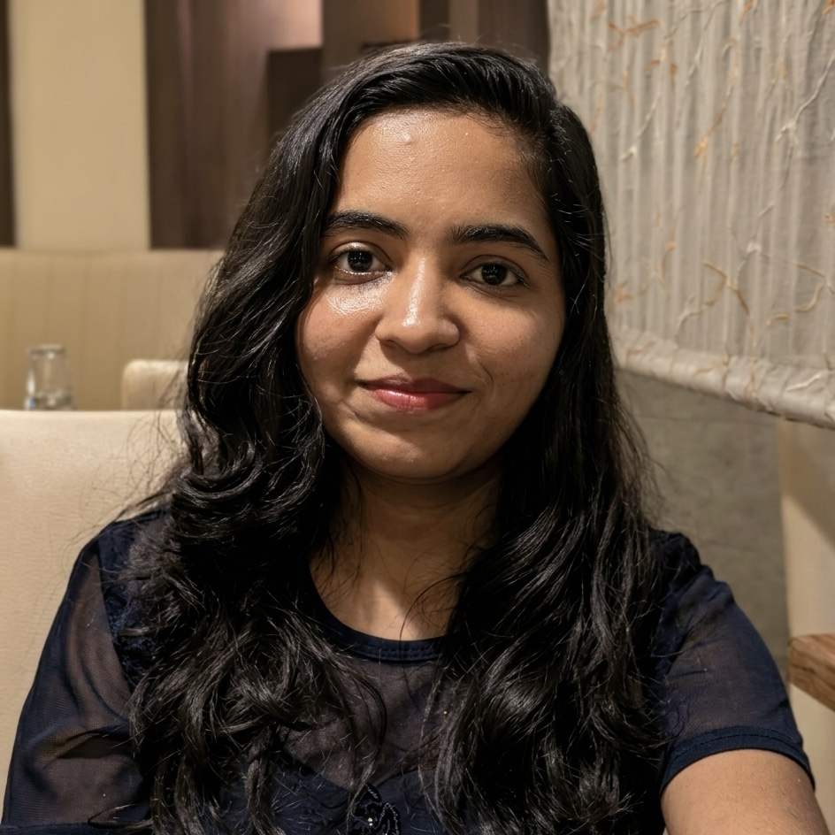
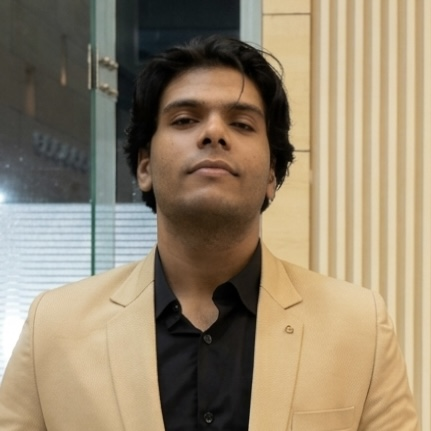
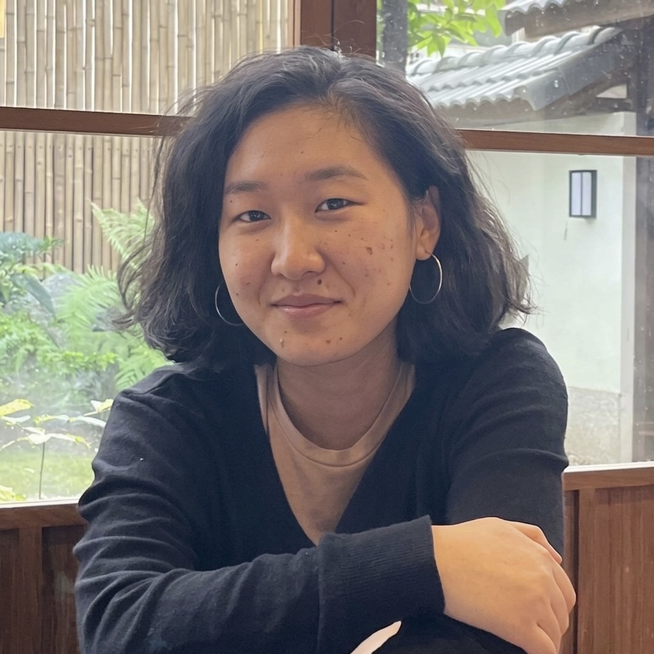

About
SynThesIs (Syntactic Theories and Interfaces) is a research lab led by Deepak Alok at IIT Delhi. We work within the generative tradition, investigating how natural languages encode grammatical information about persons, discourse, and structure.
Our work investigates the morphology, syntax and pragmatics of natural language. The questions we raise are how clausal structure encodes the speaker and the addressee (honorification, allocutivity), how nominal domains vary across article-less languages (bare nominals, classifiers, number morphology), and how ellipsis and clausal structure relate, among others.
Research Topics
Honorification & Allocutivity
Speaker & Addressee in Grammar
Discourse Particles
Split Constructions
Bare Nominals & Classifiers
Number Morphology
Ellipsis
Negation
Argument Structure
South Asian Languages
Languages We Work On
Magahi
Bangla
Assamese
Karbi
Tangkhul
Hindi-Urdu
Recent Highlights
-
Dec 2025SynThesIs hosted Discourse Particles in South Asian Languages (DiPSAL) at IIT Delhi, 22–23 December 2025.
Investigators





Former Members
News
-
2024SynThesIs — Syntactic Theories and Interfaces — is established as a research lab by Deepak Alok at the Department of Humanities and Social Sciences, IIT Delhi.